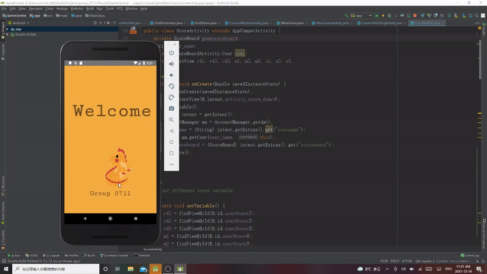
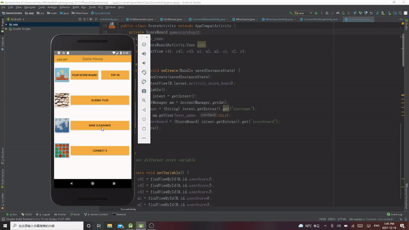

- User accounts are managed by the AccounManager, and the AccountManager serializes user data including username, password with HashMap. The AccounManager can create new user, verify login and return the user.

- The ScoreBoardManager is responsible for saving new player scores if it is on the rank. Both personal and overall scores can be return by the ScoreBoardManager.
- The Sliding Tiles uses gridviews to display every tiles and interprets which tiles to switch by user click location. Also a stack is used to store previous states for undo function. Used advanced randomization logic to prevent dead board (boards that can impossibly be sloved).

- Matrices are used to generate game board, and on every click the game will recursively check the adjacent location, if those locations are safe it will reveal them. Long clicking on tiles will mark them as mine locations. We provide different board sizes for different difficulties.

- Used similar gridviews strategy to slidingtiles, however, we implement a computer agent for player to play against with. The beginner difficulty has very basic logic -- select from all available moves randomly. The indeterminate difficulty check if the further moves would lead to a win or loss, and make predictions based on the score generated for each available move. (It is still a very basic agent, however, a decision tree or Minimax with alpha-beta pruning would be more ideal).

- The personal highest and overall highest scores are saved in the scoreboard. Users can also logout from the game center.